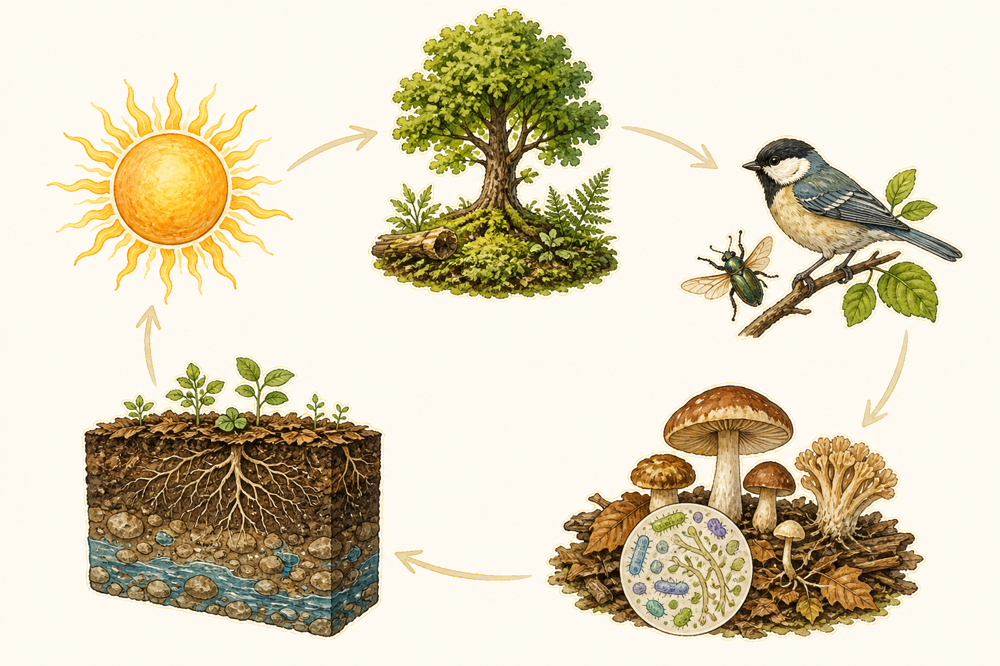
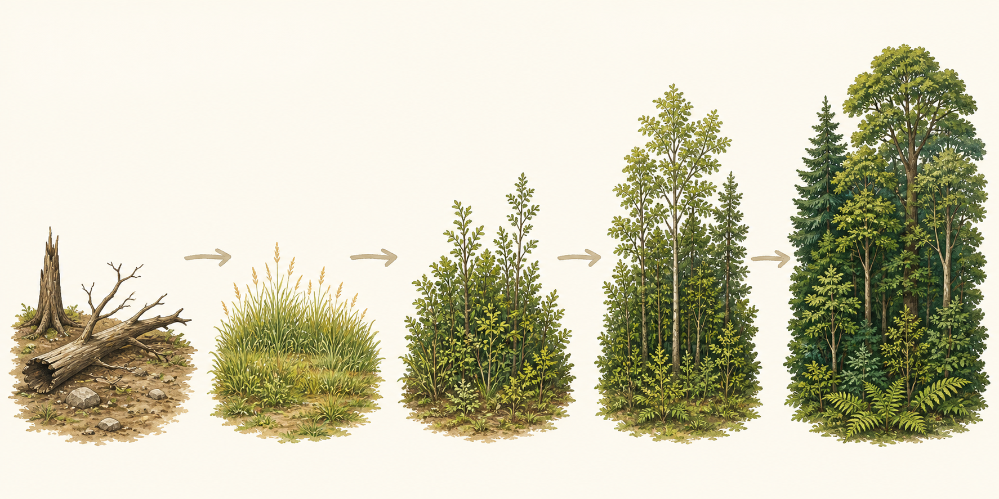
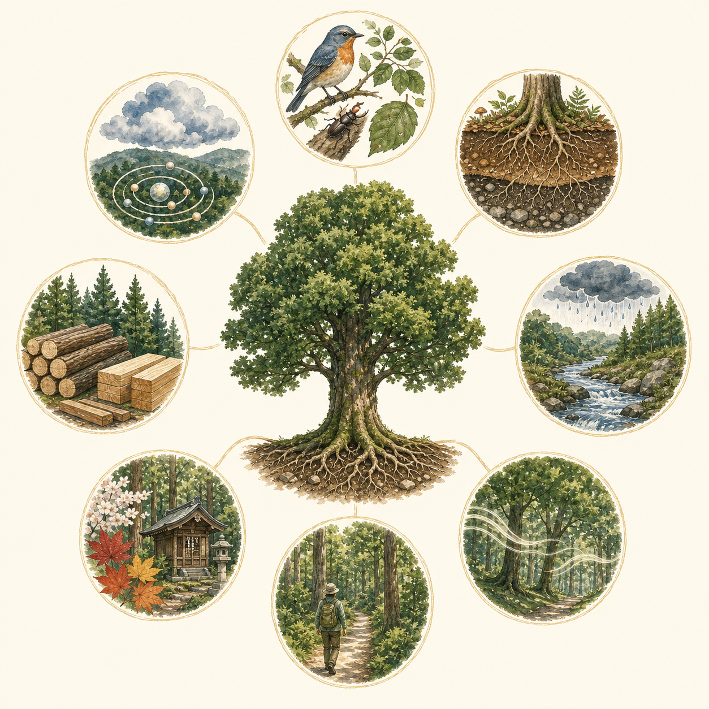
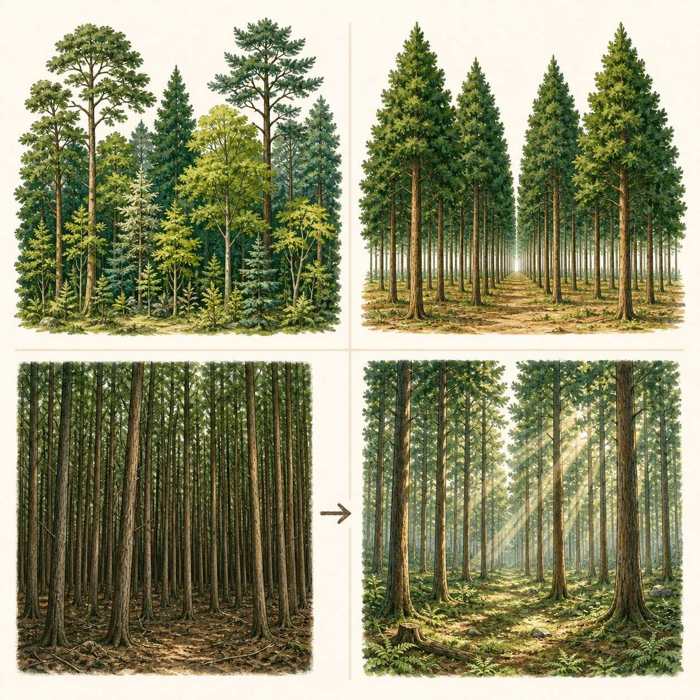
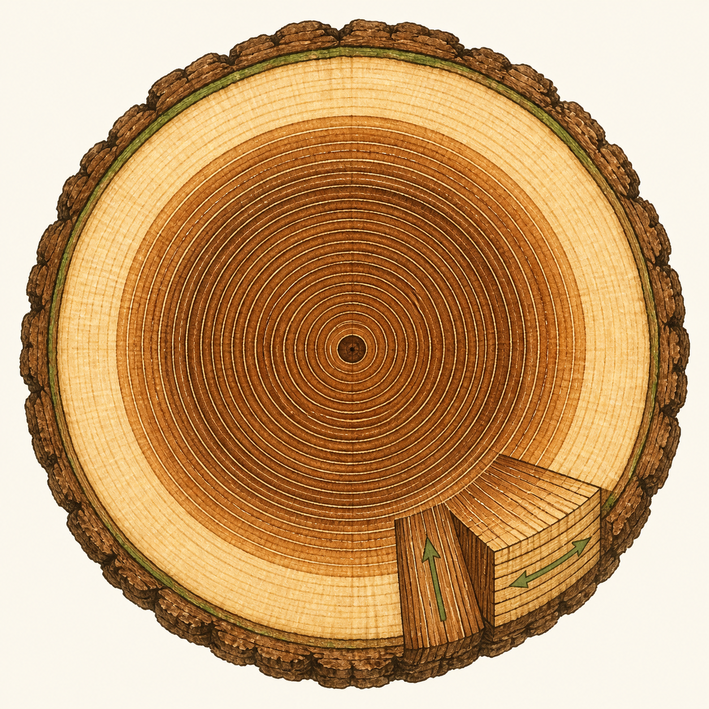
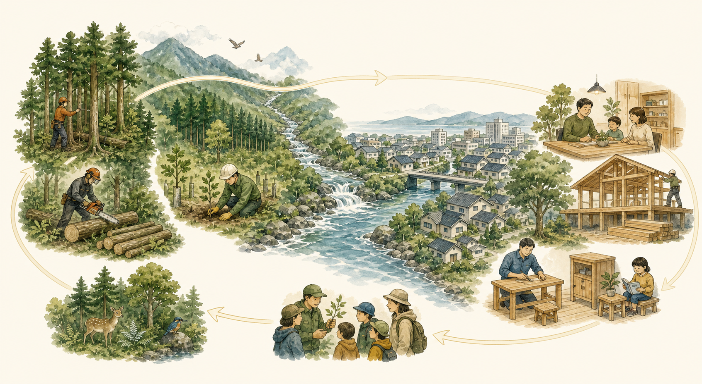

一本の木と土
葉、幹、根、菌類、土壌動物。木の内部と足元で起きていることを見る。
FOREST FIELD GUIDE
森は、木の集まりではありません。
光、水、土、生きもの、人の仕事が、長い時間をかけて関わり合う生態系です。
その仕組みを、６つの視点から読み解きます。
HOW TO READ A FOREST
葉、幹、根、菌類、土壌動物。木の内部と足元で起きていることを見る。
木の高さや密度、光の入り方、年齢の違いから、林の状態を読む。
尾根、谷、川、農地、集落までをつなぎ、森の配置と役割を考える。
01 / FOREST ECOSYSTEM
生態系とは、ある空間にいる生きものすべてと、光、水、空気、土壌などの非生物的な環境を合わせたものです。森林では、太陽のエネルギーが植物に取り込まれ、生きものの間を移動し、落葉や死骸が分解されて土へ戻ります。

RELATIONSHIPS
木の種類や量が変われば、落葉や倒木が変わります。すると、材を食べる昆虫、土壌動物、鳥類、菌類が変わり、送粉、種子散布、養分循環、水循環にも影響します。生物多様性は、種の数だけではなく、この関係の多様さでもあります。
PLACE
尾根は乾燥しやすく、養分が少ない傾向があります。谷は湿潤で養分が集まりやすい一方、洪水や土石流などの攪乱を受けます。標高、斜面の向き、土壌、競争の違いが、森林の姿を決めます。
SUCCESSION
台風、火災、崩壊、伐採などで空間が生まれると、光を好む植物から再生が始まります。草本、低木、若い林、成熟した林へと移り変わる過程を植生遷移といいます。森は完成して止まるのではなく、異なる段階の場所がモザイク状に並ぶことで、多様な環境をつくります。

02 / FOREST FUNCTIONS
森林の機能は、大きく八つに整理されます。それぞれは独立しているのではなく、健全な土壌、生物のつながり、適切な管理を共通の基盤としています。

遺伝子、種、生態系の多様性を保ち、変化へ適応する余地を残します。
樹木と土壌に炭素を蓄え、木材利用を通じて化石資源の代替にもつながります。
落葉や下層植生が地表を覆い、根が表層土を支え、侵食を抑えます。
森林土壌が雨を浸透させ、流出を遅らせ、水量と水質を調整します。
気温緩和、塵や汚染物質の捕捉、防音や遮蔽など、生活環境を整えます。
休養、運動、自然体験など、心身の健康と学びの場になります。
景観、信仰、祭礼、教育、地域の記憶を支えます。数字だけでは測れない価値です。
木材、食料、燃料、工芸材料など、再生可能な資源を生み出します。
WATER & SOIL
樹冠と落葉層が雨滴の勢いを弱め、孔隙の多い森林土壌が水を地中へ浸透させます。地中を通った水は時間をかけて川へ流れ、濁りや一部の物質が濾過されます。
ただし、森林が雨そのものを増やすわけではありません。地質や地形の影響も大きく、極端な豪雨や深層崩壊を森林だけで防ぐことはできません。「緑のダム」は万能ではなく、働きと限界を一緒に理解する必要があります。
03 / GROWING & MANAGEMENT
持続可能な森林管理は、経済、社会、環境の三つを同時に考えることです。すべての森林を同じ姿にするのではなく、木材生産、水源保全、生物多様性など、場所ごとの目的に合う林型を選びます。

NATURAL FOREST
自然の更新や攪乱によって成り立ち、年齢や樹種の異なる木が混ざることがあります。
PLANTED FOREST
人が植えて育てます。植えた後も、下刈り、除伐、間伐などの管理が必要です。
A LONG CYCLE OF WORK
THINNING
林が混みすぎると、林床へ光が届かず、木の成長や下層植生が弱くなります。残す木の樹冠、根の配置、将来の利用を考えながら間隔を整えます。急に大きな空間をつくると風害や乾燥のリスクが増えるため、立地と林況に応じた判断が必要です。
04 / FOREST CONSERVATION
森林は本来、台風、火災、崩壊、病虫害などの攪乱を受けながら更新します。保全とは、すべての変化を排除することではなく、森林の回復力を損なう過剰利用や無秩序な開発を避け、必要な機能が続くように管理することです。
全国、地域、市町村、森林経営の各段階で、森林の将来像と施業方針を定める。
林地開発許可や保安林制度などで、重要な森林の伐採や土地改変を調整する。
森林整備、治山、林道整備によって、荒廃地の復旧と持続的な管理を支える。
落葉や下層植生が雨滴を受け止め、表土が流れ出ることを抑えます。
根が表層土をつなぎ止めます。ただし、木があるだけで必ず防げるわけではありません。
基盤岩や厚い堆積層が崩れる現象は、森林の根だけで防ぐことは困難です。
水源涵養、土砂流出防備、保健など、公益的な機能が特に重要な森林を指定し、伐採や土地の形質変更に一定の制限を設けます。
05 / WOOD & USE
木材は均一な工業材料ではありません。樹種、年輪、幹の位置、細胞の向き、水分量によって性質が変わります。その違いを理解して乾燥・加工・利用することで、木の価値を長く活かせます。

水分を運ぶ働きを担う、幹の外側の部分。
生きた細胞の活動を終え、成分や色が変化した中心部。
早材と晩材の違いがつくる成長の記録。
繊維方向、放射方向、接線方向で、強さや収縮の仕方が異なります。
水分が抜けると収縮します。方向による差が、反りや割れにつながります。
節、あて材、未成熟材などを見極め、用途に適した材料へ加工します。
乾燥木材の重量のおよそ半分は炭素です。長く使うほど固定期間を延ばせます。
CASCADE USE
丸太を建築材として長く使い、再利用や木質材料へ回し、最後にエネルギーとして利用する。用途を段階的につなぐことで、資源と炭素を社会の中に長く留めます。
06 / FOREST & COMMUNITY
里山は、集落、農地、草地、林、奥山が連続する生活圏です。かつては燃料、肥料、食料、建築材料を得る場として繰り返し使われ、共同体の知恵と仕事によって維持されてきました。

WATERSHED PARTNERSHIP
森林の機能を受け取る都市と、森林を管理する山村は、流域でつながっています。訪れるだけでなく、地域材を使う、管理の費用を支える、学びや人材交流に参加する。関係を継続する仕組みが、森林と地域の両方を支えます。
WHAT WE LEARN
森は、異なる発達段階と環境が組み合わさった生態系です。
利用と保全は対立ではなく、目的と場所に応じて両立させます。
森林管理は、自然の時間と、人の仕事を長くつなぐ営みです。
森林の価値は、炭素だけでなく、水、土、生物、木材、文化、地域にあります。